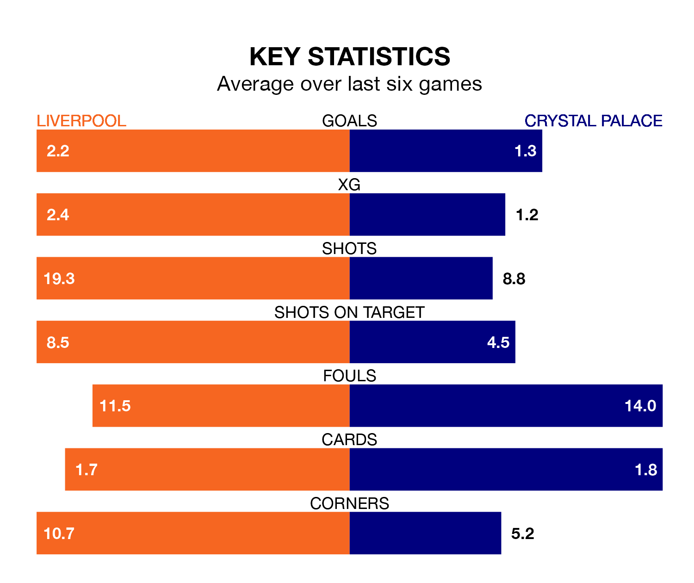

Liverpool are heavy favourites to keep all three points at home in Sunday's early kick-off against Crystal Palace.
The Reds, who sit second in the Premier League with 31 games played, are priced at 1.2 to seal victory at Anfield.
Sitting 13 places and 41 points behind them in the table, Palace are 11.0 to win with *Betting Company*, while the draw is at 6.5.
With 72 goals in 31 games so far this season, Liverpool are the league's second-highest scorers with 2.3 goals per game. And they are conceding fewer than average, letting in 30 goals at a rate of 1.0 per game.
Palace, meanwhile, are below average scorers, with 1.2 goals per game, compared to a league average of 1.6. They have conceded 1.7 goals per game.
In the last 10 years, Liverpool and Palace have played each other on 22 occasions. Liverpool won 15 of them, Palace four, and they drew three times.
On average, the Reds scored 2.3 goals and the Eagles 1.1 in those matches.
Their last meeting was on December 9, when Liverpool won 2-1 away.
In Mohamed Salah, the Reds have one of the league's sharpest shooters so far this season. He has notched 17 goals in 25 appearances, to sit third in the scoring charts.
The Eagles's top scorers, with seven goals each, are Odsonne Édouard and Jean-Philippe Mateta.
The home side are in good form in the Premier League, with four wins and two draws from their last six games.
With a win and two draws over that period, the visitors' form is much worse – they have taken five points from 18, compared to Liverpool's 14.
Liverpool's last match was on Sunday, a 2-2 draw against Manchester United, with Luis Díaz and Salah getting the goals for the Reds.
Palace lost 4-2 against Manchester City last time out, on April 6, with Mateta and Édouard on the scoresheet.
Updated: 14:47 (UTC), 09/04/24